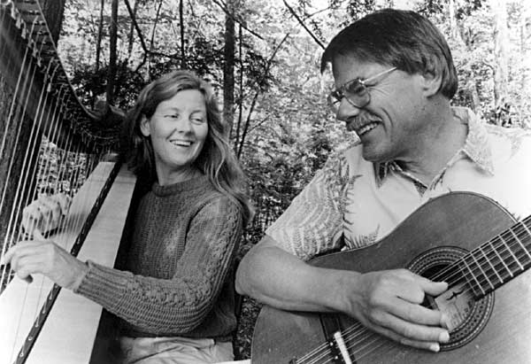

CAROL ROHL
Carol was born in Elkhart, Indiana and graduated from Carroll College in Wisconsin with a B.S. in Social Work. She came to Maine to take a 26-day course at the Hurricane Island Outward Bound School and was employed there for the next 7 years as a U.S. Coast Guard licensed captain, followed by a variety of seasonal outdoor jobs: lift-operator at a Colorado ski area, volunteer at the 1980 Lake Placid and 1984 Los Angeles Olympic Games, gardening, sailing to Ireland and Scotland and working in a firewood business. She lives on the St. George River in Warren, Maine.
Carol began playing her grandmother’s 1912 Clark Irish harp in 1986 and now performs with a 34-string Triplett Celtic harp. She plays traditional Scottish, Irish and South American tunes as well as music by contemporary folk composers. In 1989 she studied Paraguayan harp at the Edinburgh Folk Festival. Her harp performances have included weddings, receptions, open houses, birthday parties, concerts, benefits, church services, memorial services, radio broadcasts, plays, talent shows, schools, folk clubs and festivals, boat launchings, restaurants, nursing homes, libraries, art auctions, fairs and banquets.
With her husband, Maine folk musician Gordon Bok, she has performed at a variety of venues throughout New England and the Canadian Maritimes including Maine’s Rockport Folk Festival, the Festival-by-the-Sea in Saint John, New Brunswick, and the Lunenburg Folk Harbour Festival in Nova Scotia. They have also toured together across the US, New Zealand and Australia, British Columbia, and Scotland.
Since 1996 Carol has also been playing at the bedside in hospitals, homes and hospice settings. She is certified as a harp practitioner with both the International Harp Therapy Program and the Music for Healing and Transition Program. She offers harp lessons and conducts workshops on the power of music and healing.
Carol’s harp can be heard on many recordings including Gordon Bok’s Because You Asked, Other Eyes, Apples in the Basket, Herrings In The Bay, Dear To Our Island, In the Kind Land, Gatherings, and The Play of the Lady Odivere; James Stewart’s Marco Polo Suite; Anne Dodson’s From Where I Sit; and So Bravely Dream: The Songs of Jan Harmon.
"On their newest CD, Gatherings, Carol’s gently rhythmic and confident touch provides a perfect complement to Gordon’s full, deep voice and masterful guitar playing." (Woods Hole Folk Music Society)
"Carol was the first folk harp player in this area. When she came to town, we all muckled onto her." (Gordon Bok)
"The evening’s revelation came when Bok accompanied Rohl on a few instrumentals, sparkling and haunting by turns. Though Rohl was playing a Celtic harp, she demonstrated her affinity for Paraguayan harp music, which sometimes uses different time signatures simultaneously. The shimmering weave of harp tones and supple guitar rhythms cast a spell unlike anything else the duo performed." (Mike Joyce, The Washington Post)
Carol Rohl, 354 Clement Point Rd, Warren ME 04864 (207) 273-2090
You can reach her by email at carol[at]gordonbok.com